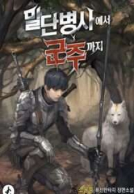

When I was 15, I lost my right hand on the battlefield. When I was 24, I mastered the skills that were necessary for my survival. But I was always told the same things, over and over: “Just quit. I'll gray even faster if I try to teach you sōjutsu.” “But if you weren't disabled, you could've learned anything you wanted, with nothing holding you back.” “Hey, let's just collect herbs. Why are you so obsessed with swordsmanship?” “Just live like everybody else.” When I was 39, I lost my left hand and fell off a cliff. And when I swallowed the Artifact I had no knowledge about… [ Searching powers… ] – Availability for growth – Desire for knowledge – Abyssal greed – Power and tenacity – Talentless persistence -Reversing the instincts After the battle, I was reborn as a 15 year old rookie. 《Experience points increased! 》 《Experience points increased! 》 《Experience points increased! 》 《Experience points increased! 》 《Experience points increased! 》 From weather-worn mercenary Chris to young soldier Chris! It's the story of a skillful lad that found the glory on the battlefield. It's the story of a talentless man going beyond, overstepping the limits. It's the story of an ordinary man becoming a knight. It's the story of an unordinary monarch protecting his people. It's the story of a man that returned to save his continent. 《Experience points acquired!》 2nd Title: From the lowest foot soldier to the king Kr Title: 말단병사에서 군주까지